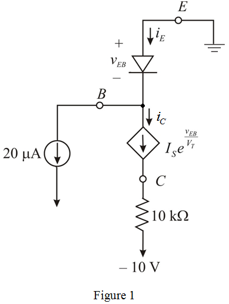

Step 1:
Refer to Figure 6.11 (b) for a pnp large signal model in the text book.
In Figure 6.11(b), the emitter is connected to ground, the base is connected to a current source that pulls  out of the base terminal, and the collector is connected to a negative supply of
out of the base terminal, and the collector is connected to a negative supply of  via a
via a  resistor.
resistor.
The modified circuit diagram is shown in Figure 1.

Step 2:
Determine the value of .
.

Substitute  for
for  in the equation.
in the equation.
Step 3:
Determine the value of base voltage.
Substitute for ,
,  for
for  and for
and for  in the equation.
in the equation.
Further simplification as follows,
Thus, the value of base voltage  is.
is.
Step 4:
Determine the value of emitter current.
Substitute  for
for ,
,  for
for , for
, for  and for
and for  in the equation.
in the equation.
Thus, the value of emitter current,  is
is
Step 5:
Determine the value of collector current in the circuit.
Substitute for ,
,  for
for  and for
and for  in the equation.
in the equation.
Step 6:
Determine value of collector voltage in the circuit.
Substitute for  in the equation.
in the equation.
Thus, the value of collector voltage  is.
is.